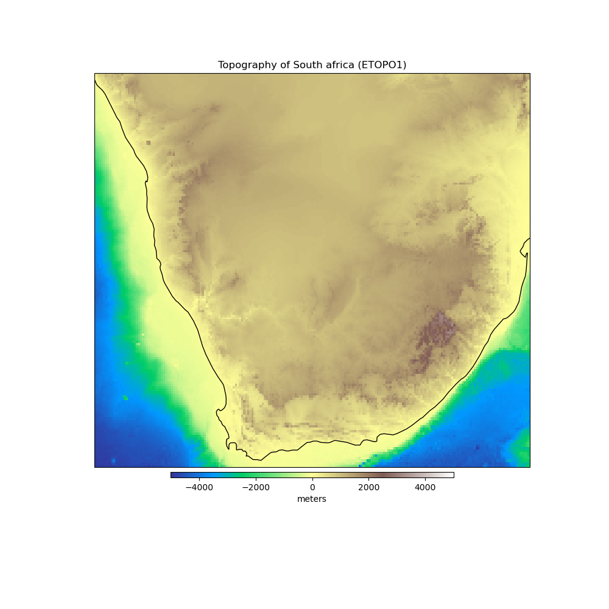

Note
Click here to download the full example code
South Africa Topography¶
The topography and bathymetry of South Africa according to the ETOPO1 model [AmanteEakins2009]. The original model has 1 arc-minute grid spacing but here we downsampled to 0.1 degree grid spacing to save space and download times. Heights are referenced to sea level.
Out:
<xarray.Dataset>
Dimensions: (longitude: 211, latitude: 171)
Coordinates:
* longitude (longitude) float64 12.0 12.1 12.2 12.3 ... 32.7 32.8 32.9 33.0
* latitude (latitude) float64 -35.0 -34.9 -34.8 -34.7 ... -18.2 -18.1 -18.0
Data variables:
topography (latitude, longitude) float64 ...
import matplotlib.pyplot as plt
import cartopy.crs as ccrs
import harmonica as hm
# Load the topography grid
data = hm.datasets.fetch_south_africa_topography()
print(data)
# Make a plot of data using Cartopy
plt.figure(figsize=(10, 10))
ax = plt.axes(projection=ccrs.Mercator())
pc = data.topography.plot.pcolormesh(
ax=ax, transform=ccrs.PlateCarree(), add_colorbar=False, cmap="terrain"
)
plt.colorbar(
pc, label="meters", orientation="horizontal", aspect=50, pad=0.01, shrink=0.6
)
ax.set_title("Topography of South africa (ETOPO1)")
ax.coastlines()
plt.show()
Total running time of the script: ( 0 minutes 0.218 seconds)